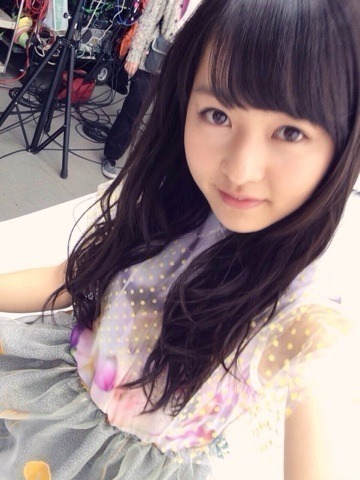

| 2014/03 15 Sat | 素敵なガラクタ。555 回目 |

歌唱衣装。
被ってるチュールは
よく見たら星柄なんだよ。
繊細なデザインがすごいかわいい。
たくさんのコメント
ありがとうございました。
早くライブで踊りたい！
そう思ってる中またまたニュースです。
4月13日幕張メッセ全国握手会後に
楽天カード会員様限定で
アンダーライブを
行うことになりました！
詳しくは
まで！
5月にもCD特典のライブするし
プリンシパルも始まるし
なかなか忙しくなりそうです。
まだまだ寒いですね。
この前、風が少し暖かく感じたから
春の装いで外出てたら
急に寒くなって大変だったの。
早く春服着たいのになあ
今回のシングルの特典映像の
詳細が出ました！
Type-A、B エチュード
三木聡さん組です。
Type-Cは
さゆりんなーちゃんひなちま私の
4人を取り上げたドキュメンタリー。
どんな風に映ってるんだろうか。。
どちらもお楽しみに！
／
描いたり作ったりなんかしらしたら
載せてみるこーなー
＼
今回はブローチだよー

この3つ♪
オフの日にせっせと縫っていました。
自分用のため、全体的に雑

左のロゼットは初めて作った。
中心はくるみボタンじゃなくて
普通のフェルトなんだけどね。
フリルなかなか整わない、難しい。
裏は汚いから見せない♪←

さっそくリュックに付けて
ママと中華街行ってきたーるんるん
やはり酢豚とごま団子。
あとかぼちゃのおやき食べた。
ママさん、この前
かわいい雑貨屋見つけたみたい。
キッチュ好きにはたまらん。
ガラクタの収集癖
やめられない止まらない

まりか
コメント(519)
2014/03/15 21:42